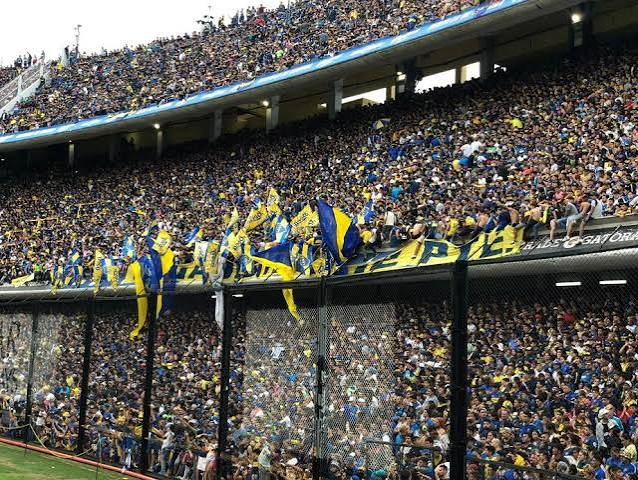
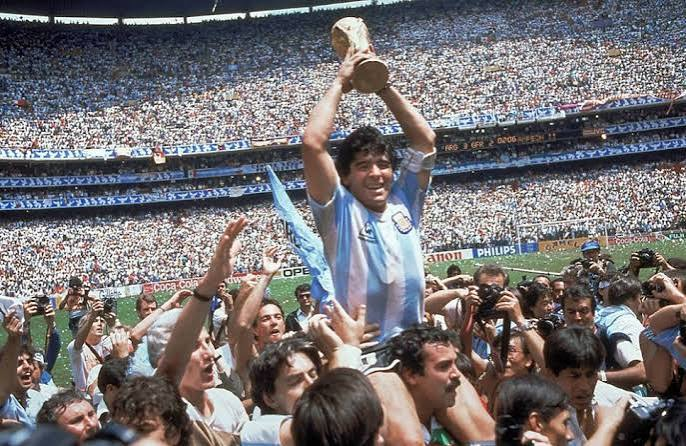
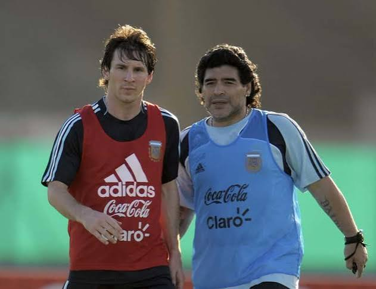

O futebol argentino
O futebol é uma das maiores paixões da Argentina. O país possui clubes tradicionais, torcidas apaixonadas e uma seleção conhecida mundialmente.
A paixão pelo futebol

O futebol faz parte da cultura argentina. Clubes como Boca Juniors e River Plate possuem grandes torcidas e uma rivalidade histórica. Os estádios argentinos são conhecidos pelas festas nas arquibancadas, com bandeiras, cantos e muita emoção. Essa paixão é transmitida de geração em geração e faz parte da identidade do povo argentino.
As Copas do Mundo

A seleção argentina conquistou três Copas do Mundo: em 1978, 1986 e 2022. Essas conquistas marcaram a história do futebol e fortaleceram a paixão dos argentinos pela seleção. O título de 2022 foi conquistado após uma emocionante final contra a França, decidida nos pênaltis. Esses títulos são motivo de orgulho nacional.
Grandes jogadores

A Argentina revelou grandes nomes do futebol, como Diego Maradona e Lionel Messi. Os dois se tornaram símbolos da seleção argentina e conquistaram títulos importantes ao longo de suas carreiras. Maradona foi campeão mundial em 1986, enquanto Messi liderou a conquista de 2022. Ambos são admirados por torcedores do mundo.